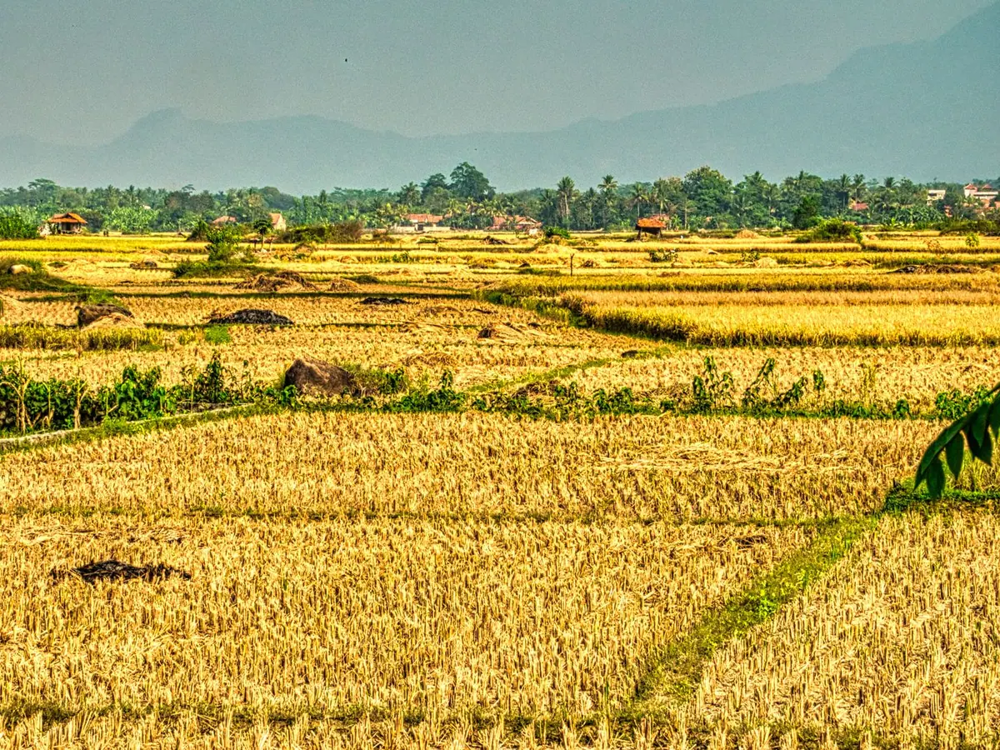
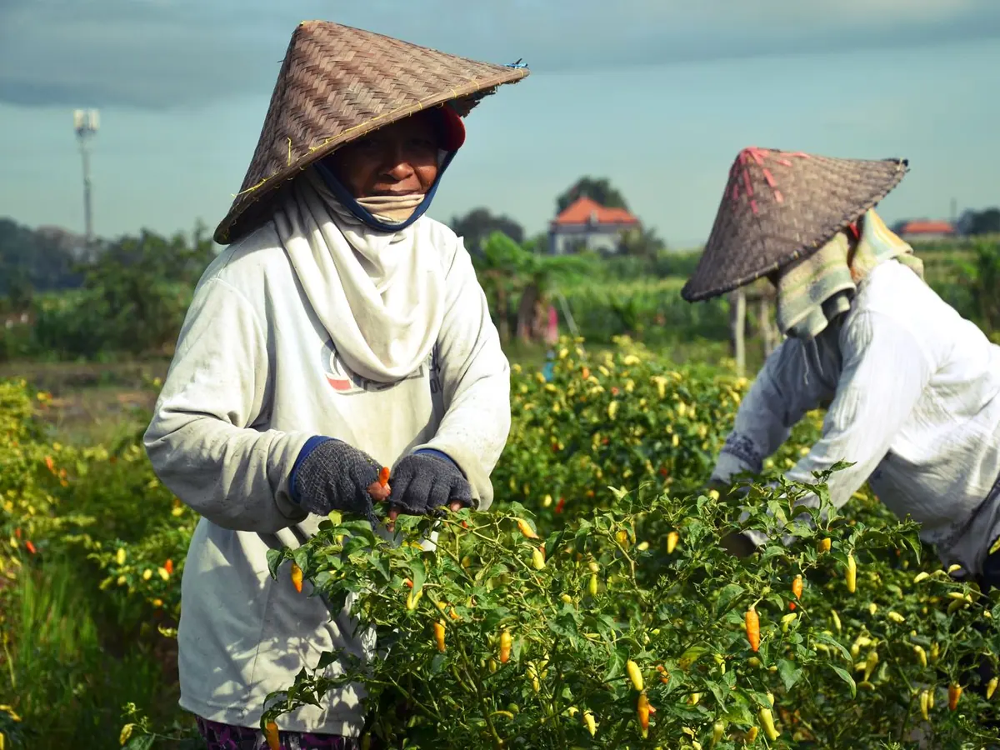
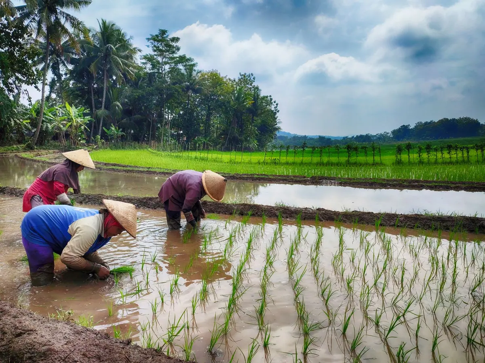

Portal Informasi Pertanian Indonesia Rizky Fadilah Al Fariz · 2403010097 · Kelas D
Bacaan lengkap dan materi belajar
Artikel Pertanian
Enam artikel utuh tentang pertanian berkelanjutan, ketahanan pangan, hortikultura, padi, kesuburan tanah, dan perubahan iklim. Setiap artikel dapat dibaca dari awal hingga akhir sebagai bahan belajar mandiri.
6 artikel•6 topik•± 6 menit per artikel
Daftar isi
Pilih topik yang ingin kamu pelajari
Keenam artikel di halaman ini ditulis lengkap, bukan ringkasan singkat. Gunakan kotak pencarian untuk menyaring topik, atau pilih langsung dari daftar isi.
Pertanian Berkelanjutan: Menjaga Produktivitas Tanpa Menghabiskan Sumber Daya
± 6 menit bacaMateri edukasi
Pertanian berkelanjutan menjaga tanah, air, dan ekosistem agar tetap produktif dalam jangka panjang.
Pertanian berkelanjutan adalah cara mengelola usaha tani agar kebutuhan pangan saat ini terpenuhi tanpa mengurangi kemampuan generasi berikutnya untuk memenuhi kebutuhan mereka. Konsep ini tidak hanya berbicara tentang hasil panen, tetapi juga tentang kesehatan tanah, ketersediaan air, keanekaragaman hayati, serta kesejahteraan petani dan masyarakat yang terlibat di dalamnya.
Dalam praktiknya, pertanian berkelanjutan berdiri di atas tiga pilar yang saling terkait: lingkungan, ekonomi, dan sosial. Ketika salah satu pilar diabaikan, sistem pertanian menjadi rapuh. Lahan yang dipaksa berproduksi tanpa perawatan akhirnya kehilangan kesuburan, sementara petani yang tidak memperoleh keuntungan layak akan kesulitan melanjutkan usahanya.
Mengapa pertanian berkelanjutan penting?
Pertambahan penduduk dan kebutuhan pangan yang terus meningkat membuat tekanan terhadap lahan dan air semakin besar. Di saat yang sama, luas lahan pertanian menghadapi ancaman alih fungsi, sementara praktik budidaya yang terlalu intensif dapat mempercepat erosi, memadatkan tanah, dan menurunkan kandungan bahan organik.
Dampak lain yang sering muncul adalah pencemaran akibat penggunaan pupuk dan pestisida berlebihan, penurunan keanekaragaman hayati di sekitar lahan, serta ketergantungan petani pada masukan dari luar. Semua persoalan ini membuat biaya produksi membengkak dan hasil panen menjadi tidak stabil. Pertanian berkelanjutan hadir sebagai pendekatan yang mencoba menyeimbangkan produktivitas dengan daya tahan lahan dalam jangka panjang.
Prinsip utama
Efisiensi sumber daya: menggunakan air, pupuk, dan energi sesuai kebutuhan agar tidak ada pemborosan.
Kesehatan tanah: menjaga bahan organik, struktur tanah, dan kehidupan mikroba sebagai fondasi pertumbuhan tanaman.
Konservasi air: menampung, menghemat, dan mendistribusikan air secara tepat, termasuk pada musim kemarau.
Diversifikasi: tidak bergantung pada satu komoditas atau satu pola tanam sehingga risiko berkurang.
Kelayakan ekonomi dan sosial: praktik yang dijalankan harus tetap menguntungkan dan dapat diterima masyarakat setempat.
Praktik yang dapat diterapkan di lapangan
Rotasi dan tumpangsari: mengganti jenis tanaman antarmusim membantu memutus siklus hama dan penyakit serta menjaga keseimbangan hara.
Mulsa dan tanaman penutup tanah: menahan erosi, menjaga kelembapan, menekan gulma, dan mengurangi penguapan pada musim panas.
Pupuk organik dan kompos: meningkatkan bahan organik tanah sehingga struktur tanah membaik dan kemampuan menyimpan air meningkat.
Pengendalian hama terpadu: memantau tanaman secara rutin, memanfaatkan musuh alami, dan menggunakan pestisida secara selektif hanya ketika diperlukan.
Irigasi efisien: memperbaiki saluran, menggunakan irigasi tetes pada tanaman bernilai tinggi, atau menerapkan pengairan berselang pada padi.
Agroforestri: menanam pohon di sekitar lahan untuk mengurangi hembusan angin, meneduhkan tanaman, dan menambah sumber penghasilan.
Pengelolaan pascapanen dan limbah: jerami dan sisa tanaman diolah menjadi kompos atau pakan, bukan dibakar.
Penerapan skala pekarangan
Pertanian berkelanjutan tidak hanya untuk lahan luas. Di pekarangan rumah, prinsip yang sama bisa dijalankan dengan cara sederhana: menanam beberapa jenis sayuran dalam pot atau polybag, mengolah sisa dapur menjadi kompos, menampung air hujan untuk menyiram, serta mencampur tanaman yang berbeda dalam satu bedeng. Kebiasaan kecil ini melatih pemahaman tentang siklus hara dan pengelolaan air.
Tantangan dan strategi transisi
Perubahan menuju praktik berkelanjutan membutuhkan waktu. Pada awal penerapan, hasil bisa sedikit menurun karena tanah sedang diperbaiki, sementara biaya tenaga kerja untuk pembuatan kompos atau pengendalian hama alami bisa lebih tinggi. Karena itu, perubahan sebaiknya dilakukan bertahap: mulai dari satu atau dua praktik yang paling mudah, catat hasilnya setiap musim, lalu tambahkan praktik berikutnya setelah terbukti sesuai dengan kondisi lahan.
Contoh penerapan
Seorang petani dengan lahan sawah sekitar setengah hektare dapat memulai secara bertahap. Pada musim pertama, ia mengganti kebiasaan membakar jerami dengan mengomposkannya, lalu memakai kompos tersebut sebagai pupuk dasar. Pada musim kedua, ia menerapkan pengairan berselang dan menanam kacang-kacangan setelah padi untuk membantu memperbaiki hara tanah. Hasil tiap musim dicatat dalam buku sederhana: tanggal tanam, jenis pupuk, jumlah air, dan hasil panen.
Setelah dua sampai tiga musim, catatan tersebut menjadi dasar keputusan. Jika hasil mulai stabil dan biaya pupuk berkurang, praktik dapat dilanjutkan dan diperluas. Jika ada kendala, misalnya serangan hama meningkat, petani dapat berkonsultasi dengan penyuluh sebelum menambah masukan kimia. Pola bertahap dan berbasis catatan inilah yang membuat pertanian berkelanjutan dapat dijalankan secara nyata, bukan hanya menjadi konsep di atas kertas.
Kesimpulan
Pertanian berkelanjutan adalah pendekatan jangka panjang yang menyeimbangkan hasil panen, kesehatan lahan, dan kesejahteraan petani. Prinsipnya sederhana: gunakan sumber daya secara efisien, jaga tanah dan air, variasikan komoditas, serta ambil keputusan berdasarkan pengamatan. Perubahan tidak perlu dilakukan sekaligus; langkah kecil yang konsisten dan tercatat akan memberi dampak yang terasa dari musim ke musim.
Poin penting: pertanian berkelanjutan bukan berarti menolak semua masukan modern, melainkan menggunakan pupuk, pestisida, dan air secara tepat agar hasil tetap tinggi tanpa merusak lahan untuk masa depan.
Bacaan lanjutan: materi penyuluhan Kementerian Pertanian tentang pertanian berkelanjutan dan pengelolaan lahan, publikasi FAO mengenai pertanian berkelanjutan, serta panduan pengendalian hama terpadu dari penyuluh pertanian setempat.
Ketahanan Pangan Indonesia: Pilar, Tantangan, dan Strategi Penguatan
± 6 menit bacaMateri edukasi

Ketahanan pangan tidak hanya soal beras; keragaman sumber pangan memperkuat sistem pangan nasional.
Ketahanan pangan adalah kondisi ketika seluruh masyarakat memiliki akses fisik dan ekonomi terhadap pangan yang cukup, aman, bergizi, dan sesuai kebutuhan. Ketahanan pangan bukan hanya persoalan tersedianya bahan makanan di pasar, tetapi juga menyangkut kemampuan keluarga untuk menjangkau pangan tersebut dan memanfaatkannya dengan baik.
Indonesia memiliki keragaman agroekosistem luar biasa, dari sawah irigasi hingga lahan kering dan pekarangan. Keragaman ini seharusnya menjadi kekuatan, asalkan dikelola dengan perencanaan yang baik dan didukung infrastruktur, pengetahuan, serta kelembagaan yang kuat.
Empat pilar ketahanan pangan
Ketersediaan: jumlah dan jenis pangan yang tersedia dari produksi dalam negeri, cadangan, maupun perdagangan.
Akses: kemampuan masyarakat memperoleh pangan, dipengaruhi harga, pendapatan, dan jarak ke sumber pangan.
Pemanfaatan: cara pangan diolah dan dikonsumsi agar bergizi, aman, dan sesuai kebutuhan tubuh.
Stabilitas: kemampuan sistem pangan menjaga ketersediaan dan akses sepanjang waktu, termasuk saat musim sulit atau bencana.
Keragaman pangan sebagai kunci
Beras memiliki peran penting sebagai pangan pokok bagi sebagian besar masyarakat Indonesia, tetapi ketergantungan pada satu komoditas membuat sistem pangan rentan terhadap gangguan produksi dan fluktuasi harga. Diversifikasi pangan dengan memanfaatkan sumber karbohidrat lokal seperti jagung, sagu, umbi-umbian, dan sorgum dapat mengurangi tekanan tersebut sekaligus memperkaya gizi masyarakat.
Diversifikasi juga berdampak pada lahan: petani yang menanam beberapa komoditas memiliki risiko lebih kecil dibandingkan petani yang bergantung pada satu tanaman saja. Tantangannya, pangan lokal memerlukan pengembangan pengolahan, pemasaran, dan kebiasaan konsumsi agar benar-benar diterima.
Faktor yang menentukan
Lahan dan air: alih fungsi lahan serta persaingan penggunaan air menjadi ancaman utama produksi.
Benih dan teknologi: varietas unggul, pemupukan berimbang, dan mekanisasi yang tepat meningkatkan produktivitas.
Iklim: pola hujan yang berubah menuntut penyesuaian jadwal tanam dan pilihan varietas.
Infrastruktur dan logistik: jalan, gudang, pendingin, dan pelabuhan menentukan kelancaran distribusi antardaerah.
Pasar dan harga: fluktuasi harga dapat menekan petani maupun konsumen dalam waktu yang sama.
Sumber daya manusia: pengetahuan petani, peran penyuluh, dan regenerasi tenaga kerja pertanian.
Ancaman yang perlu diwaspadai
Beberapa ancaman yang sering dibahas dalam konteks ketahanan pangan adalah alih fungsi lahan produktif, fragmentasi kepemilikan lahan akibat pewarisan, serangan organisme pengganggu tanaman, serta kehilangan hasil pada saat panen dan pascapanen. Perubahan iklim memperbesar risiko kekeringan dan banjir, sementara ketergantungan pada pupuk dan pestisida impor membuat biaya produksi rentan terhadap gejolak global.
Strategi penguatan
Intensifikasi berkelanjutan: meningkatkan produktivitas lahan yang ada dengan benih baik, pemupukan berimbang, dan pengelolaan air yang efisien.
Diversifikasi pangan: mengembangkan komoditas lokal dan mengolahnya menjadi produk yang mudah diterima konsumen.
Cadangan pangan dan logistik: menjaga stok dan kelancaran distribusi agar pasokan stabil sepanjang tahun.
Hilirisasi: mengembangkan pengolahan hasil tani untuk menambah nilai dan memperpanjang umur simpan.
Riset dan penyuluhan: mendekatkan hasil penelitian ke petani melalui demonstrasi dan pendampingan.
Digitalisasi pertanian: informasi cuaca, harga, dan pasar yang mudah diakses membantu petani mengambil keputusan.
Penguatan kelembagaan: koperasi dan kelompok tani memudahkan akses sarana produksi, pembiayaan, dan pasar bersama.
Edukasi gizi: meningkatkan pemahaman masyarakat tentang pola makan beragam dan aman.
Peran generasi muda
Ketahanan pangan bukan tanggung jawab petani semata. Generasi muda dapat berkontribusi melalui inovasi budidaya skala kecil, pemasaran produk lokal, pengolahan pangan, hingga pemanfaatan teknologi informasi. Perhatian pada kesejahteraan petani juga penting agar kegiatan pertanian tetap diminati sebagai pilihan usaha.
Contoh penerapan
Di tingkat desa, ketahanan pangan dapat dimulai dengan pendataan sederhana: komoditas apa yang paling dibutuhkan warga, berapa produksi lokal, dan dari mana pasokan selama ini berasal. Kelompok tani kemudian dapat mengatur pola tanam bersama agar panen tidak menumpuk pada satu bulan, menanam sumber karbohidrat lokal seperti ubi dan jagung di pekarangan, serta membangun lumbung pangan desa untuk cadangan saat harga naik atau pasokan berkurang.
Langkah berikutnya adalah pengolahan dan pemasaran. Ubi dapat diolah menjadi tepung atau camilan, jagung menjadi makanan olahan, dan sayur pekarangan dijual melalui koperasi desa. Dengan begitu, nilai tambah tetap berada di desa, umur simpan produk lebih panjang, dan warga memiliki alternatif pangan selain beras. Contoh ini menunjukkan bahwa ketahanan pangan dibangun dari keputusan-keputusan kecil yang saling terhubung, bukan hanya dari program besar.
Kesimpulan
Ketahanan pangan Indonesia bergantung pada empat pilar yang harus berjalan bersamaan: ketersediaan, akses, pemanfaatan, dan stabilitas. Diversifikasi pangan, penguatan petani, perbaikan logistik, dan pemanfaatan teknologi adalah strategi yang saling melengkapi. Ketahanan pangan juga bukan urusan sektor pertanian saja, melainkan hasil kerja bersama antara pemerintah, petani, pelaku usaha, dan masyarakat sebagai konsumen.
Poin penting: ketahanan pangan dibangun dari ketersediaan yang cukup, akses yang terjangkau, gizi yang baik, dan stabilitas pasokan. Keragaman pangan dan penguatan petani adalah fondasi yang saling melengkapi.
Bacaan lanjutan: publikasi Badan Pusat Statistik mengenai produksi pangan, laporan Kementerian Pertanian dan Badan Pangan Nasional tentang kebijakan pangan, serta data FAO tentang ketahanan pangan dan gizi.
Budidaya Hortikultura: Panduan dari Pemilihan Komoditas sampai Pascapanen
± 6 menit bacaMateri edukasi

Hortikultura mencakup sayur, buah, tanaman hias, dan tanaman obat dengan perlakuan yang berbeda-beda.
Hortikultura adalah cabang pertanian yang berfokus pada budidaya tanaman kebun. Istilah ini mencakup empat kelompok besar: sayuran, buah-buahan, tanaman hias, dan tanaman obat (biofarmaka). Dibandingkan tanaman pangan seperti padi dan jagung, hortikultura umumnya lebih intensif dalam penggunaan tenaga kerja dan modal, tetapi nilai jualnya sering lebih tinggi.
Karakteristik yang perlu dipahami
Nilai ekonomi tinggi sehingga layak dibudidayakan pada lahan terbatas, termasuk pekarangan.
Mudah rusak setelah panen sehingga penanganan harus cepat dan hati-hati.
Fluktuasi harga yang tinggi karena panen sering bersamaan dan daya simpan produk pendek.
Perlakuan spesifik antarkomoditas: kebutuhan air, cahaya, dan pemangkasan berbeda-beda.
Memilih komoditas
Pemilihan komoditas sebaiknya mempertimbangkan permintaan pasar, kesesuaian iklim dan ketinggian tempat, ketersediaan air, kondisi tanah, serta kemampuan perawatan. Menanam komoditas yang sedang populer tanpa mempertimbangkan kemampuan pengelolaan sering berakhir dengan hasil rendah atau produk yang sulit dijual.
Sayuran daun seperti kangkung, sawi, dan bayam relatif cepat panen dan cocok untuk pemula.
Sayuran buah seperti tomat, cabai, dan terung membutuhkan perawatan lebih intensif dan masa tanam lebih panjang.
Buah-buahan menuntut investasi jangka panjang, pemangkasan, dan pengendalian hama yang konsisten.
Tahapan budidaya
1. Persiapan lahan dan media. Lahan diolah dan dibuat bedengan dengan drainase baik. Tambahkan kompos atau pupuk kandang matang agar struktur tanah membaik. Pada budidaya dalam pot, gunakan campuran tanah, kompos, dan bahan porous agar air tidak menggenang.
2. Benih dan bibit. Gunakan benih bersertifikat atau bibit sehat dari sumber terpercaya. Untuk komoditas tertentu, bibit disemai dahulu di persemaian, lalu dipindahkan ke lahan setelah memiliki beberapa helai daun dan perakaran cukup kuat.
3. Penanaman. Atur jarak tanam sesuai karakter tanaman agar sirkulasi udara dan cahaya merata. Tanam pada kedalaman yang tepat; terlalu dalam dapat menghambat pertumbuhan, terlalu dangkal membuat tanaman mudah rebah.
4. Pemeliharaan. Penyiraman dilakukan pagi atau sore hari sesuai kebutuhan. Pemupukan berimbang diberikan berdasarkan fase pertumbuhan, bukan sekadar rutinitas. Pasang ajir untuk tanaman merambat atau berbatang lemah, lakukan pemangkasan pada cabang yang tidak produktif, dan jaga kebersihan bedengan dari gulma.
5. Pengendalian organisme pengganggu. Periksa tanaman secara rutin dan kenali tanda serangan sejak awal. Utamakan pencegahan melalui sanitasi, pergiliran tanaman, dan musuh alami. Pestisida sebaiknya digunakan secara selektif dan sesuai dosis anjuran.
6. Panen. Panen pada tingkat kematangan yang sesuai tujuan pemasaran. Gunakan alat yang bersih dan tajam, hindari luka pada produk, dan lakukan pada waktu yang tidak terlalu panas.
7. Pascapanen. Sortasi untuk memisahkan produk yang rusak, grading berdasarkan ukuran dan mutu, kemudian pengemasan yang melindungi produk dari benturan. Untuk sayuran dan buah yang cepat rusak, pendinginan atau pengiriman cepat sangat membantu mempertahankan mutu.
Hidroponik dan pekarangan
Hortikultura dapat dijalankan pada lahan sempit melalui pot, polybag, bedeng vertikal, atau hidroponik sederhana. Kunci keberhasilannya tetap sama: media yang sesuai, air yang cukup, nutrisi yang seimbang, dan pengamatan rutin. Sayuran daun biasanya menjadi pilihan pertama karena masa panennya pendek.
Kesalahan umum pemula
Jarak tanam terlalu rapat sehingga tanaman saling menaungi dan mudah terserang penyakit.
Penyiraman berlebihan sampai media tergenang dan akar membusuk.
Pemupukan berlebihan yang justru merusak akar dan mencemari lingkungan.
Panen terlambat sehingga produk terlalu matang dan mudah rusak.
Mengabaikan kebersihan alat dan lahan sehingga hama dan penyakit cepat menyebar.
Contoh penerapan
Sebuah rumah tangga dengan pekarangan sekitar 20 meter persegi dapat membuat dua bedeng berukuran 2 x 3 meter dan menambahkan beberapa polybag. Bedeng pertama ditanami kangkung dan sawi yang cepat panen, sedangkan bedeng kedua ditanami cabai dan tomat yang perawatannya lebih intensif. Sisa lahan diisi polybag untuk tanaman obat seperti jahe dan serai.
Rencana perawatan dibuat sederhana: penyiraman pagi dan sore, pengamatan hama dua kali seminggu, serta pemupukan organik setiap dua minggu. Kangkung dapat dipanen pada umur sekitar satu bulan, lalu bedeng segera ditanami ulang agar tidak kosong. Hasil panen tidak hanya menghemat pengeluaran dapur, tetapi juga menjadi latihan nyata tentang jarak tanam, kebutuhan air, dan penanganan panen yang benar.
Kesimpulan
Hortikultura menawarkan nilai ekonomi tinggi, tetapi menuntut perencanaan dan perawatan yang lebih teliti dibandingkan tanaman pangan. Kunci keberhasilannya adalah memilih komoditas sesuai kondisi lahan dan pasar, menyiapkan media serta bibit yang baik, merawat tanaman secara rutin, dan menangani hasil panen dengan cepat. Untuk pemula, sayuran daun adalah pilihan paling aman karena masa tanamnya pendek dan perawatannya relatif mudah.
Poin penting: keberhasilan hortikultura bergantung pada perencanaan komoditas, perawatan rutin, dan penanganan pascapanen yang cepat. Perawatan kecil yang konsisten lebih penting daripada tindakan besar yang terlambat.
Bacaan lanjutan: panduan budidaya sayuran dari Direktorat Jenderal Hortikultura Kementerian Pertanian, publikasi Balai Penelitian Tanaman Sayuran, serta materi penyuluhan hortikultura dari dinas pertanian daerah.
Panduan Budidaya Padi: dari Benih hingga Pascapanen
± 7 menit bacaMateri edukasi

Budidaya padi memerlukan perhatian pada benih, pengairan, pemupukan, dan panen agar hasil serta mutu terjaga.
Padi merupakan komoditas strategis karena beras menjadi pangan pokok bagi sebagian besar masyarakat Indonesia. Padi dibudidayakan pada berbagai agroekosistem: sawah irigasi, sawah tadah hujan, lahan rawa, dan lahan kering (gogo). Setiap lingkungan memiliki tantangan berbeda, sehingga panduan berikut perlu disesuaikan dengan kondisi setempat.
Memilih varietas dan benih
Pilih varietas yang sesuai ketinggian tempat, musim tanam, dan kondisi lahan.
Perhatikan umur tanaman, potensi hasil, serta ketahanan terhadap hama dan penyakit utama di wilayah tersebut.
Gunakan benih bersertifikat agar mutu dan viabilitasnya terjamin.
Uji daya tumbuh benih sebelum tanam; benih yang tidak tenggelam saat direndam umumnya memiliki kualitas baik.
Persiapan lahan
Lahan diolah hingga tanah melumpur dengan kedalaman yang cukup agar akar mudah berkembang. Ratakan permukaan lahan agar pengairan merata dan tanaman tidak tergenang di satu bagian saja. Buat saluran pemasukan dan pembuangan air yang berfungsi baik. Bahan organik seperti kompos atau jerami yang telah terurai dapat ditambahkan untuk memperbaiki struktur tanah.
Persemaian
Rendam benih dalam air bersih, buang benih yang mengapung dan hampa.
Tiriskan lalu peram dalam kain lembap selama satu sampai dua hari hingga muncul tunas.
Sebar benih pada persemaian yang tanahnya halus dan cukup pupuk organik.
Jaga persemaian tetap lembap, tidak tergenang, dan bebas gangguan hama.
Bibit umumnya siap dipindahkan pada umur sekitar dua sampai tiga minggu, saat bibit sehat dan berdaun cukup.
Penanaman
Tanam bibit dengan hati-hati agar akar tidak rusak. Kedalaman tanam dijaga dangkal dan bibit segera ditanam setelah dicabut dari persemaian. Pola tanam jajar legowo dapat diterapkan untuk memberi ruang lebih bagi tanaman pinggir sehingga mendapatkan cahaya lebih banyak. Jarak tanam dan jumlah bibit per lubang disesuaikan dengan varietas serta kesuburan lahan.
Pengairan
Pada sawah irigasi, tanaman padi tidak harus selalu tergenang. Pengairan berselang (basah dan kering) dapat menghemat air dan merangsang perakaran lebih dalam. Fase yang perlu diperhatikan adalah saat tanaman masih muda, fase pembentukan anakan, fase berbunga, dan menjelang panen. Drainase yang baik menjelang panen membantu lahan mengering dan memudahkan pekerjaan.
Pemupukan berimbang
Pupuk diberikan berdasarkan kebutuhan tanaman dan kondisi hara tanah, bukan sekadar kebiasaan. Pupuk organik membantu memperbaiki tanah, sedangkan pupuk anorganik memasok unsur hara secara cepat. Waktu pemberian umumnya mencakup pupuk dasar saat tanam dan pupuk susulan pada fase pertumbuhan tertentu. Hindari pemberian nitrogen berlebihan karena dapat meningkatkan serangan hama dan penyakit.
Gulma, hama, dan penyakit
Gulma perlu dikendalikan sejak awal agar tidak bersaing dalam memperebutkan air, cahaya, dan hara. Pengendalian dapat dilakukan secara manual, mekanis, atau dengan bahan yang sesuai. Untuk hama dan penyakit seperti wereng, penggerek batang, tikus, blas, dan hawar daun, lakukan pemantauan rutin dan terapkan pengendalian terpadu. Penggunaan varietas tahan dan menjaga kebersihan lahan sering lebih efektif daripada pengendalian yang dilakukan setelah serangan meluas.
Panen
Panen dilakukan ketika tanaman memasuki fase matang fisiologis, yang ditandai oleh malai yang menguning dan butir gabah yang mengeras. Panen terlalu awal menghasilkan gabah berbutir hijau, sedangkan panen terlambat meningkatkan risiko kehilangan hasil. Gunakan alat panen yang bersih dan hindari menumpuk gabah terlalu lama dalam kondisi lembap.
Pascapanen
Setelah dirontokkan, gabah sebaiknya segera dikeringkan hingga kadar airnya aman untuk penyimpanan, umumnya sekitar 13–14 persen. Pengeringan bertahap dan merata mencegah keretakan butir dan serangan jamur. Simpan gabah di tempat kering, berventilasi, dan terlindung dari hama gudang. Perhatikan juga kebersihan alat perontok dan tempat penjemuran agar mutu gabah terjaga.
Contoh penerapan
Pada petak contoh seluas sekitar 500 meter persegi, petani dapat menguji satu rangkaian budidaya yang tertib. Benih direndam dan diperam hingga berkecambah, disemai pada bak persemaian, lalu bibit berumur sekitar tiga minggu ditanam dengan pola jajar legowo. Sebelum tanam, petani mengecek kondisi tanah dan menambahkan kompos dari jerami musim sebelumnya.
Selama pertumbuhan, pengairan diatur berselang dan lahan dikeringkan sementara pada fase tertentu untuk merangsang perakaran. Pemupukan susulan diberikan pada waktu yang telah ditentukan, sementara pengamatan hama dilakukan setiap minggu agar wereng atau tikus tidak menyebar. Saat panen, gabah langsung dikeringkan hingga kadar airnya aman, lalu disimpan dalam wadah bersih. Dengan mencatat hasil petak contoh, petani memperoleh perbandingan yang jelas dengan cara yang biasa diterapkan sebelumnya.
Kesimpulan
Budidaya padi yang baik adalah rangkaian keputusan yang saling mendukung, mulai dari pemilihan varietas hingga penyimpanan gabah. Tidak ada satu faktor yang berdiri sendiri: benih bermutu akan sia-sia tanpa pengairan dan pemupukan yang tepat, dan hasil panen yang tinggi bisa menurun mutunya jika pascapanen dilakukan sembarangan. Karena setiap wilayah memiliki iklim, tanah, dan serangan hama yang berbeda, rekomendasi penyuluh setempat tetap menjadi acuan utama.
Poin penting: hasil padi yang baik berasal dari kombinasi benih bermutu, pengairan yang tepat, pemupukan berimbang, pengendalian hama terpadu, serta panen dan pascapanen yang hati-hati. Sesuaikan dosis dan jadwal dengan rekomendasi penyuluh setempat.
Bacaan lanjutan: panduan budidaya padi dari Badan Penelitian dan Pengembangan Pertanian serta Balai Besar Penelitian Tanaman Padi, informasi kalender tanam Kementerian Pertanian, dan arahan penyuluh pertanian wilayah setempat.
Kesuburan Tanah dan Pembuatan Kompos: Fondasi Pertanian yang Sehat
± 6 menit bacaMateri edukasi
Tanah yang sehat menghidupkan akar dan mikroba; bahan organik adalah kuncinya.
Tanah bukan sekadar media tempat akar menancap. Tanah adalah sistem hidup yang berisi mineral, bahan organik, air, udara, dan jutaan mikroorganisme. Kesuburan tanah menentukan kemampuan tanah menyediakan unsur hara, menahan air, dan mendukung pertumbuhan tanaman secara sehat.
Tiga aspek kesuburan tanah
Kesuburan fisik: struktur tanah yang remah, tidak padat, dengan pori-pori yang cukup untuk air dan udara.
Kesuburan kimia: ketersediaan unsur hara dan tingkat keasaman (pH) yang sesuai bagi tanaman.
Kesuburan biologi: aktivitas mikroba, cacing, dan organisme tanah yang membantu menguraikan bahan organik dan menyediakan hara.
Ciri-ciri tanah yang sehat
Warna tanah cenderung gelap karena kandungan bahan organik cukup.
Tanah mudah ditembus air tetapi tidak cepat menggenang.
Ketika digenggam, tanah tidak mengeras seperti batu dan tidak lepas seluruhnya seperti pasir.
Masih ditemukan cacing atau organisme tanah lain sebagai tanda kehidupan biologis berjalan.
Tanaman tumbuh merata dengan daun yang tidak mudah menguning tanpa sebab.
Masalah tanah yang umum dijumpai
Pemadatan tanah akibat pengolahan berat dan penggunaan alat berulang; atasi dengan bahan organik dan pembongkaran tanah secara bijak.
Erosi pada lahan miring; atasi dengan mulsa, terasering, dan tanaman penutup tanah.
Kemasan tanah yang menghambat penyerapan hara; atasi dengan pengapuran sesuai hasil uji tanah.
Bahan organik rendah akibat pembakaran sisa tanaman; atasi dengan pengomposan dan pemberian pupuk kandang matang.
Mengapa kompos penting
Kompos adalah hasil penguraian bahan organik oleh mikroorganisme. Kompos memperbaiki struktur tanah, meningkatkan daya simpan air, menyediakan hara secara perlahan, dan menghidupkan mikroba tanah. Berbeda dengan pupuk anorganik yang bekerja cepat, kompos membangun kesuburan tanah dalam jangka panjang sehingga keduanya sebaiknya digunakan secara berimbang.
Membuat kompos langkah demi langkah
Kumpulkan bahan: sisa tanaman, daun kering, sisa dapur nabati, dan kotoran ternak yang sudah matang. Hindari sisa daging, minyak, dan kotoran hewan peliharaan.
Cacah bahan agar ukurannya lebih kecil sehingga proses penguraian lebih cepat.
Campur bahan dengan perbandingan seimbang antara bahan cokelat (daun kering, jerami) dan bahan hijau (sisa sayuran, rumput segar).
Tumpuk bahan di bak, tong, atau lubang dengan lapisan setebal kira-kira sejengkal hingga tumpukan cukup tebal.
Atur kelembapan: tumpukan cukup lembap, seperti sponge yang diperas. Jika terlalu kering, siram; jika terlalu basah, tambahkan bahan kering.
Jaga aerasi dengan membalik tumpukan secara berkala, misalnya setiap satu hingga dua minggu.
Tunggu proses pematangan sekitar empat sampai delapan minggu, tergantung bahan dan kondisi lingkungan.
Kenali tanda matang: warna cokelat gelap, bau seperti tanah, suhu tumpukan menurun, dan bahan asal sudah tidak dikenali.
Kompos skala rumah
Rumah tangga dapat membuat kompos dengan komposter ember bertingkat, tong plastik berlubang, atau lubang sederhana di pekarangan. Kuncinya tetap sama: bahan seimbang, kelembapan terjaga, dan aerasi cukup. Untuk skala kecil, aduk tumpukan setiap beberapa hari agar bau tidak muncul dan proses berjalan lebih cepat.
Menggunakan kompos
Kompos dapat dicampurkan ke media tanam, ditaburkan di sekitar perakaran, atau dijadikan bahan dasar bedengan. Pada budidaya pot, campurkan kompos dengan tanah dan bahan porous agar media ringan dan tidak tergenang. Ingat bahwa kompos menyediakan hara secara perlahan, sehingga pemupukan tetap dilakukan sesuai kebutuhan tanaman dan hasil uji tanah bila memungkinkan.
Contoh penerapan
Sebuah rumah tangga dapat memulai komposter dari tong plastik berlubang. Setiap hari, sisa sayuran dan kulit buah dikumpulkan dalam wadah kecil, sementara daun kering disimpan terpisah. Dua kali seminggu, bahan hijau dan bahan cokelat dicampur dengan perbandingan kira-kira seimbang, lalu dimasukkan ke tong dan diaduk. Jika cuaca kering, tumpukan disiram sedikit; jika terlalu basah, ditambahkan daun kering.
Setelah sekitar enam sampai delapan minggu, kompos yang matang ditandai warna gelap dan bau seperti tanah. Kompos tersebut dicampur ke media tanam dengan perbandingan satu bagian kompos dan dua bagian tanah untuk tanaman sayur dalam pot. Catatan sederhana tentang tanggal pengadukan dan kondisi tumpukan membantu rumah tangga memahami prosesnya, sekaligus mengurangi sampah organik yang dibuang setiap hari.
Kesimpulan
Kesuburan tanah adalah hasil pengelolaan jangka panjang, bukan sesuatu yang dapat diperbaiki dalam satu kali pemupukan. Bahan organik seperti kompos memperbaiki struktur tanah, meningkatkan daya simpan air, dan menghidupkan mikroba yang membantu penyediaan hara. Membuat kompos sendiri juga mengurangi limbah rumah tangga. Kuncinya adalah bahan yang seimbang, kelembapan yang cukup, aerasi yang baik, dan kesabaran menunggu proses pematangan.
Poin penting: memberi bahan organik secara rutin lebih baik daripada memberi banyak kompos sekali saja. Tanah yang terus mendapat kompos akan lebih gembur, lebih tahan kekeringan, dan lebih sehat bagi akar.
Bacaan lanjutan: panduan kesuburan tanah dan pengomposan dari Balai Penelitian Tanah, materi penyuluhan Kementerian Pertanian, serta pedoman pengelolaan tanah dan bahan organik dari FAO.
Adaptasi Pertanian terhadap Perubahan Iklim: Langkah Nyata di Lahan
± 6 menit bacaMateri edukasi
Pengelolaan lahan yang tepat, termasuk mekanisasi dan konservasi, membantu petani menghadapi cuaca yang tidak menentu.
Perubahan iklim memberi dampak nyata bagi pertanian: musim hujan dan kemarau yang tidak lagi tepat waktu, curah hujan yang lebih ekstrem, suhu yang meningkat, serta munculnya kekeringan atau banjir pada periode yang tidak biasa. Petani merasakan dampaknya langsung melalui perubahan jadwal tanam, serangan hama yang bergeser, dan ketidakpastian hasil panen.
Perubahan yang dirasakan di lahan
Awal musim hujan yang bergeser sehingga jadwal tanam menjadi tidak pasti.
Hujan lebat dalam waktu singkat yang meningkatkan risiko erosi dan genangan.
Kemarau lebih panjang yang mengurangi ketersediaan air irigasi.
Suhu lebih tinggi yang meningkatkan penguapan dan mempercepat kekeringan tanah.
Pergeseran pola hama dan penyakit ke wilayah atau musim yang sebelumnya tidak umum.
Adaptasi dan mitigasi
Adaptasi adalah usaha menyesuaikan cara bertani agar tetap produktif menghadapi kondisi iklim yang berubah. Mitigasi adalah usaha mengurangi penyebab perubahan iklim, misalnya menekan emisi gas rumah kaca dari kegiatan pertanian. Keduanya penting dan dapat dijalankan bersamaan.
Strategi adaptasi yang dapat diterapkan
Memanfaatkan informasi iklim: pantau prakiraan cuaca dan kalender tanam, lalu sesuaikan waktu tanam dan pilihan komoditas.
Memilih varietas adaptif: gunakan varietas yang toleran terhadap kekeringan, genangan, atau suhu tinggi sesuai karakter wilayah.
Mengelola air dengan bijak: buat embung atau penampungan air hujan, perbaiki saluran irigasi, terapkan pengairan berselang, dan gunakan mulsa untuk menekan penguapan.
Menjaga kesehatan tanah: tambahkan bahan organik secara rutin agar tanah mampu menyimpan air lebih baik dan lebih tahan terhadap cuaca ekstrem.
Mendiversifikasi usaha tani: kombinasikan tanaman, ternak, atau pohon agar pendapatan tidak bergantung pada satu komoditas.
Menguatkan perlindungan tanaman: lakukan pemantauan rutin dan pengendalian terpadu agar serangan hama akibat perubahan cuaca tidak meluas.
Memanfaatkan kelembagaan: kelompok tani dan penyuluh membantu berbagi informasi, akses bantuan, dan pengelolaan risiko bersama.
Mitigasi dari lahan pertanian
Gunakan pupuk nitrogen secara efisien agar tidak ada kelebihan yang terbuang ke udara dan air.
Olah sisa tanaman menjadi kompos, bukan dibakar.
Pertahankan pohon dan tutupan lahan untuk menyimpan karbon serta menjaga iklim mikro.
Hemat energi melalui perawatan alat dan penggunaan mesin yang sesuai kebutuhan.
Teknologi pendukung
Sensor kelembapan tanah, stasiun cuaca sederhana, dan aplikasi informasi iklim membantu petani mengambil keputusan tentang waktu tanam, pengairan, dan pemupukan. Drone untuk pemantauan lahan serta pengolahan data sederhana dapat mendeteksi masalah lebih awal. Penggunaannya tetap perlu disesuaikan dengan skala usaha dan biaya yang tersedia.
Langkah awal dalam satu musim tanam
Catat pola hujan dan kondisi lahan pada musim sebelumnya sebagai acuan.
Tentukan jadwal tanam dengan mempertimbangkan prakiraan iklim setempat.
Siapkan penampungan air dan perbaiki saluran drainase sebelum musim hujan.
Tambahkan kompos atau bahan organik sebelum olah tanah.
Pantau tanaman dan cuaca setiap minggu, lalu sesuaikan perawatan sesuai kondisi.
Contoh penerapan
Misalkan prakiraan menunjukkan awal musim hujan mundur dua hingga tiga minggu dibandingkan kebiasaan sebelumnya. Petani dapat menunda persemaian agar bibit tidak terlalu lama menunggu air, memilih varietas yang umurnya lebih pendek, dan memperbaiki saluran drainase agar lahan tidak tergenang saat hujan lebat datang. Sementara menunggu hujan, penampungan air dan mulsa dipasang untuk menjaga kelembapan tanah.
Ketika hujan turun, petani tetap memantau prakiraan mingguan dan kondisi lahan. Jika muncul tanda serangan hama yang bergeser akibat cuaca, pengendalian dilakukan lebih awal dan terarah. Seluruh keputusan dicatat agar musim berikutnya memiliki pembanding. Contoh ini menunjukkan bahwa adaptasi bukan teknologi mahal, melainkan perpaduan informasi cuaca, penyesuaian jadwal, dan pengelolaan air serta tanah yang lebih hati-hati.
Kesimpulan
Perubahan iklim menuntut petani untuk lebih luwes dalam mengambil keputusan. Informasi cuaca yang dipantau rutin, varietas yang sesuai, pengelolaan air dan tanah yang baik, serta diversifikasi usaha tani adalah fondasi adaptasi yang dapat diterapkan siapa saja. Mitigasi melalui efisiensi pupuk, pengomposan, dan pemeliharaan tutupan lahan juga penting agar kegiatan pertanian tidak memperburuk perubahan iklim. Kombinasi adaptasi dan mitigasi membuat usaha tani lebih tahan menghadapi ketidakpastian.
Poin penting: adaptasi perubahan iklim tidak harus dimulai dengan teknologi mahal. Informasi cuaca, varietas yang tepat, penampungan air, dan penambahan bahan organik sudah memberi perbedaan besar bagi ketahanan usaha tani.
Bacaan lanjutan: informasi iklim dan prakiraan musim dari Badan Meteorologi, Klimatologi, dan Geofisika, arahan Kementerian Pertanian tentang adaptasi perubahan iklim, serta laporan IPCC mengenai perubahan iklim dan pertanian.